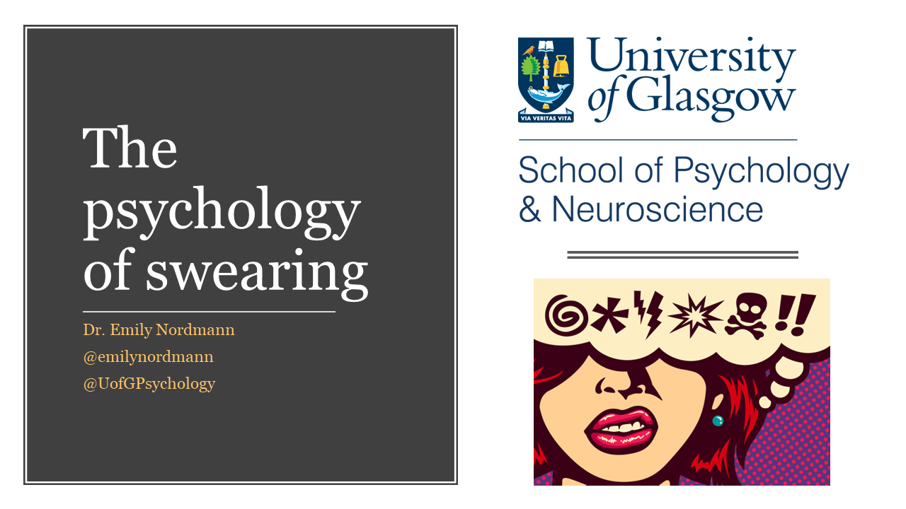
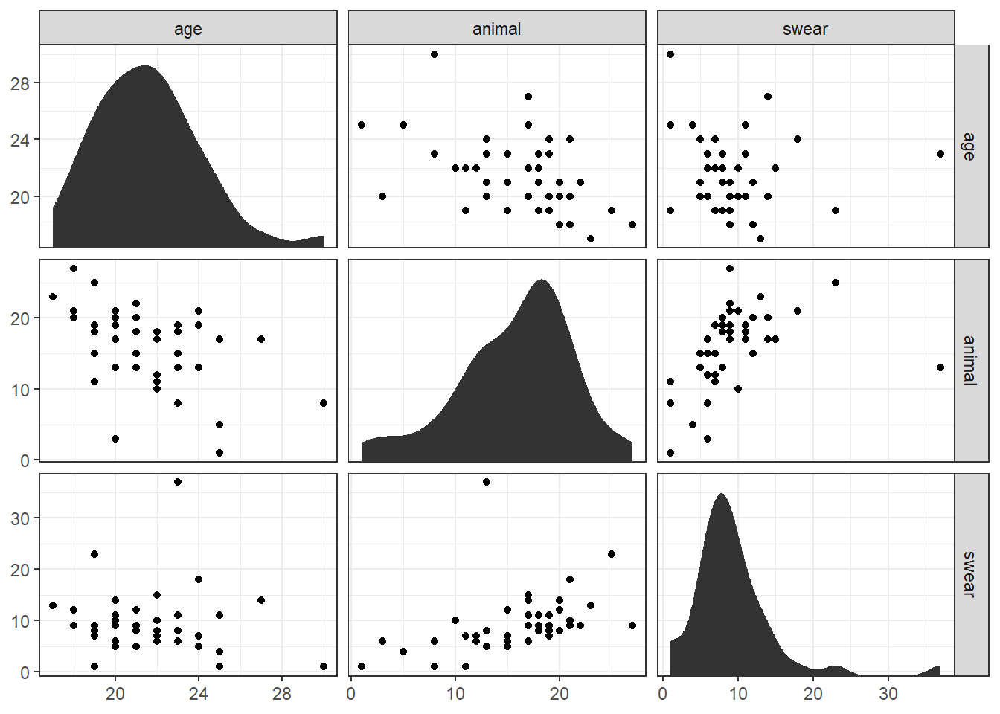
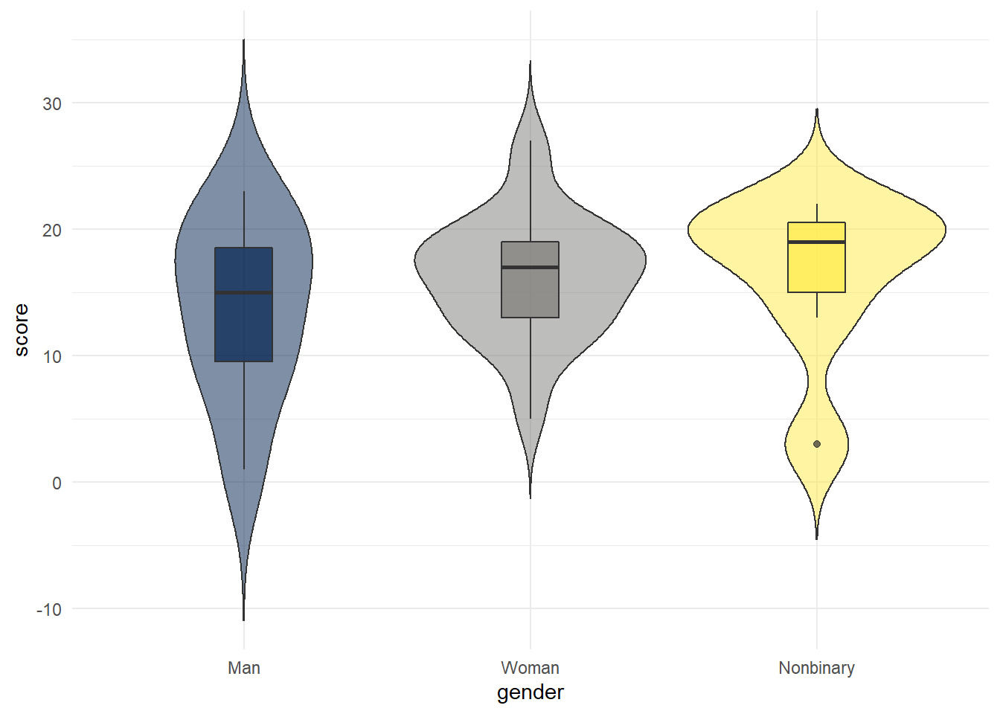
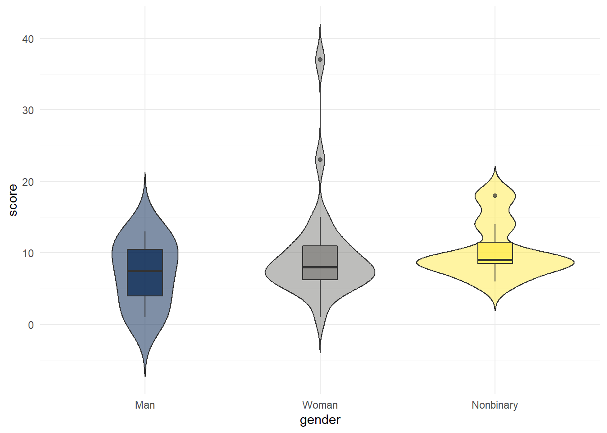
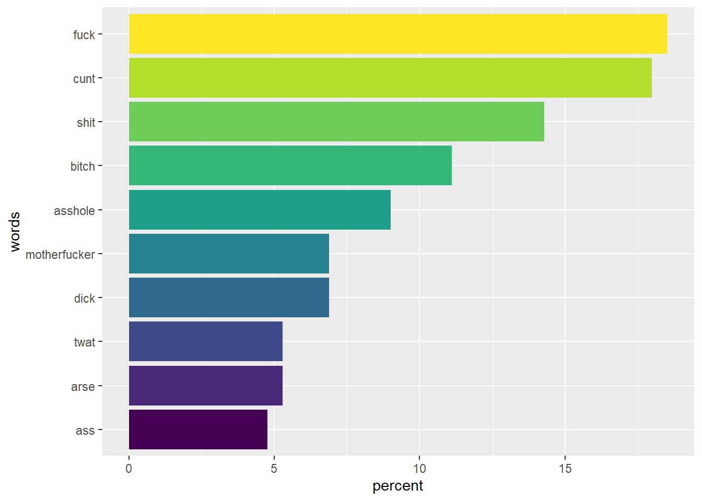
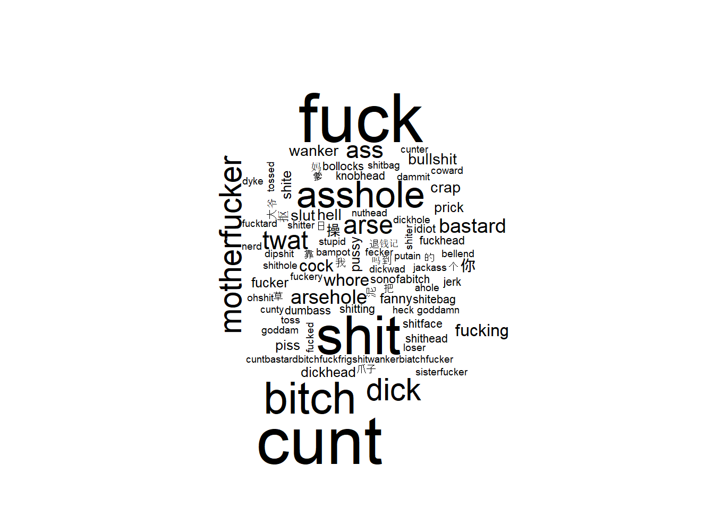
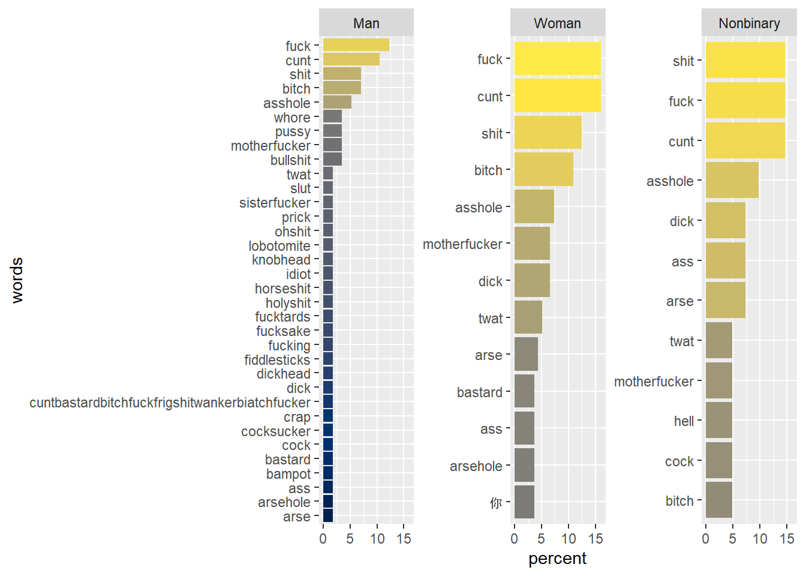
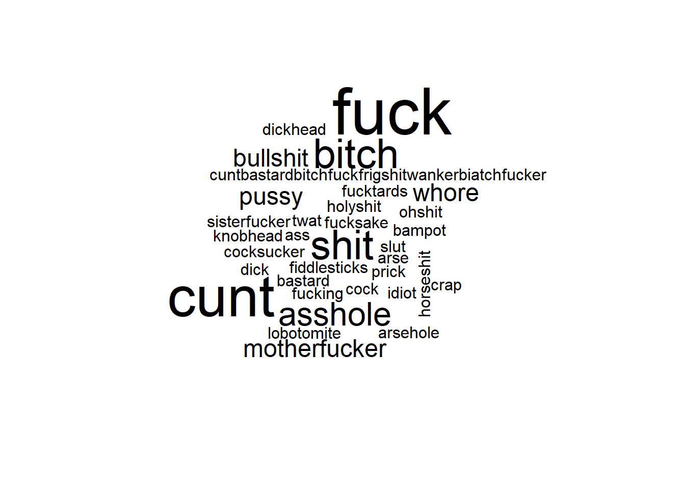
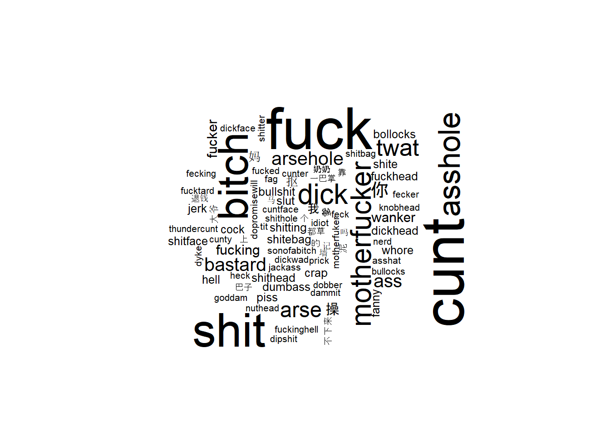
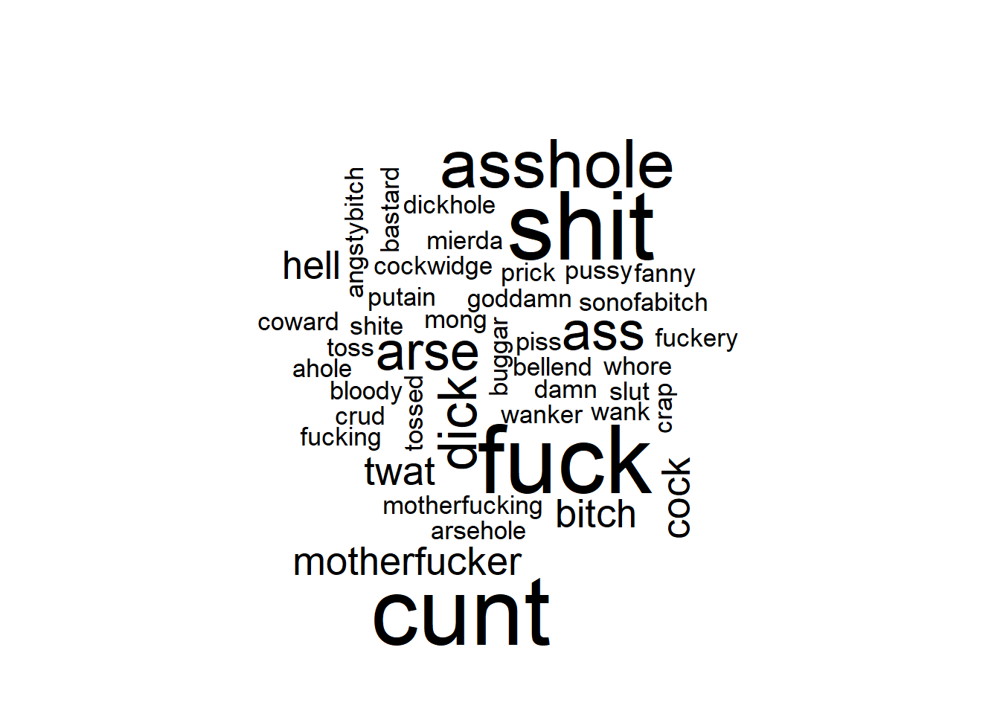

Psychology of Swearing 2022

This website accompanies the Psychology of Swearing talk held on Thursday 6th October 2022 for the University of Glasgow Psychology Society.
Reading list
If you would like more information about anything presented in this talk, I recommend the following sources:
Books
- Benjamin Bergen – What the F: What Swearing Reveals About Our Language, Our Brains, and Ourselves. Amazon link.
- Steven Pinker - The Stuff of Thought. Amazon link.
- Emma Byrne - Swearing is Good For You. Amazon link.
Websites
https://stronglang.wordpress.com/
https://twitter.com/stronglang
Journal papers & pre-prints
Relationship between age and vocabulary
The correlation between age and animals is r = -0.47, p = 0.006.
The correlation between age and swears is r = -0.12, p = 0.461.
The correlation between swears and animals is r = 0.4, p = 0.018.

Vocabulary scores by gender
General fluency
| gender | average_score |
|---|---|
| Man | 13.75 |
| Woman | 16.19 |
| Nonbinary | 16.43 |

Swearing
| gender | average_score |
|---|---|
| Man | 7.12 |
| Woman | 9.81 |
| Nonbinary | 10.43 |

Most frequent swear words

Word cloud

Most frequent words by gender

Word cloud - men

Word cloud - women

Word cloud - non-binary

Emily Nordmann
Senior Lecturer in Psychology, Associate Dean of Learning and Teaching
I am a teaching-focused Senior lecturer and conduct research into the relationship between learning, student engagement, and technology.